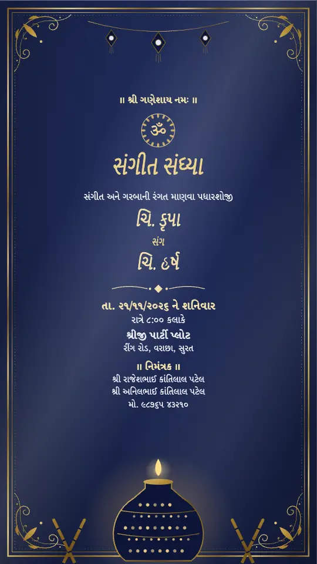

Save the Date · Ring Ceremony · Haldi · Mehendi · Sangeet · Wedding (Vivah) · Reception
Sangeet invitations
The Sangeet is the party of the wedding week: songs, choreographed dances, and in Gujarati families often a full night of garba and raas. It is the most relaxed card in the set and can carry more personality. If family members are performing, say so, and give a time guests should arrive by. If dinner is served, mention it.
Sangeet cards are usually sent to a wider list than Haldi or Mehendi, including friends. Download the phone format for WhatsApp and keep the text short.
Every design below opens in the editor with sample wording for this ceremony. You can switch any card to English, Hindi, Marathi, Gujarati, Punjabi or Tamil once it is open.

Vrindavan Peacock & Flute
Hindi · Radha-Krishna
Twilight blue fading to a lotus pond, with leaves and temple bells hanging from the top and a peacock feather among the lotuses. It is built around Radha and Krishna, and the Hindi sample opens with श्री राधे कृष्ण under the heading संगीत संध्या. A natural choice for a Sangeet with bhajans or raas.

Bollywood Marquee Night
English · Floral, no deity
Dark chocolate with a border of marquee bulbs running around the edge and a gold art deco sunburst at the top, like an old cinema sign. 'Sangeet Night' is set large in gold capitals. English text, no religious line. Pick it if your Sangeet has rehearsed performances and a dance floor.

Garba Raas Night
Gujarati · Lord Ganesha
Navy blue with small lanterns hanging along the top, and a decorated garbo, the pierced clay pot with a lamp inside, at the bottom between a pair of dandiya sticks. The Gujarati sample opens with a Ganesha line under સંગીત સંધ્યા. Made for a garba night before the wedding.

Dhol Jaago Phulkari
Punjabi · Ek Onkar
Jaago is the Punjabi night procession where relatives dance through the streets with a lit pot and a dhol. Deep maroon with a phulkari-style geometric border at the top and a red and gold dhol at the bottom. Text is in Punjabi under ਸੰਗੀਤ ਸ਼ਾਮ, with Ek Onkar.

Qawwali Mehfil Lanterns
English · Bismillah
Midnight navy with glowing lanterns hanging inside a Mughal multifoil arch. It opens with Bismillah-ir-Rahman-ir-Rahim and is meant for a qawwali or music evening before a Nikkah. English text in gold script and serif.
Not sure what to write? Read the wording guide for every ceremony.